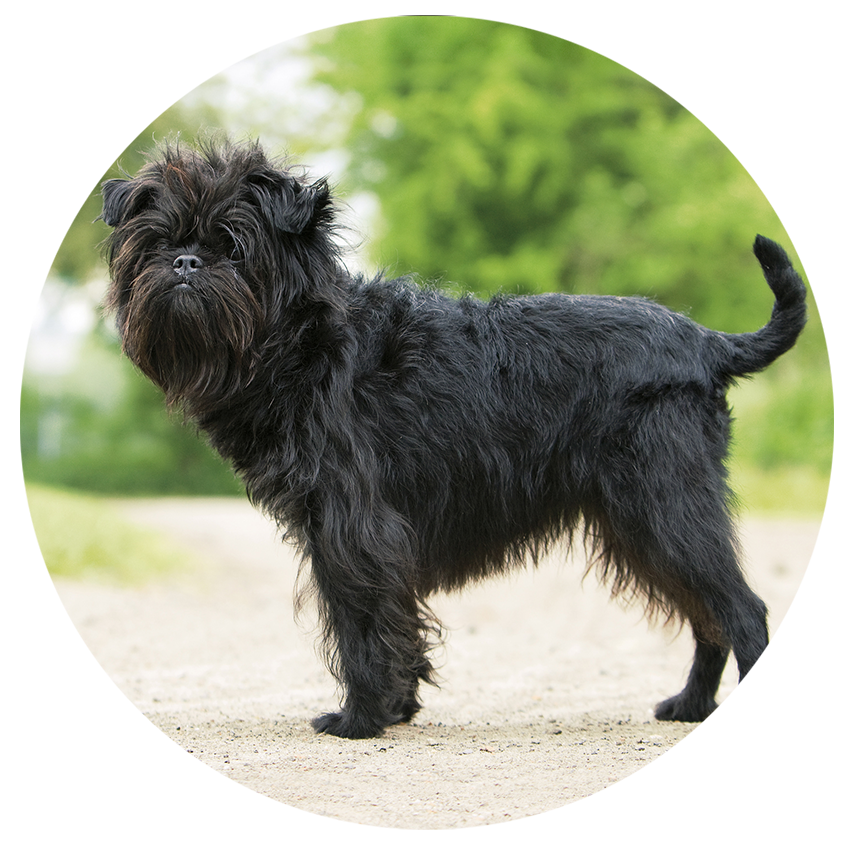

Аффенпинчер
АФФЕНПИНЧЕР (нем. Affenpinscher, англ. Monkey Dog), порода декоративных собак. Название "аффенпинчер" переводится с немецкого как "обезьяний пинчер" (нем. Affe - обезьяна). Родина этой породы - Германия, немцы часто называют ее карликовым аффенпинчером, французы - "усатым бесенком". Известен в Германии с 17 века, изображения этой собачки можно встретить на картинах ван Дейка и Дюрера. Поначалу порода была выведена для ловли крыс, но впоследствии превратилась в прекрасного компаньона, привязанного исключительно к хозяину. По поводу происхождения существует несколько мнений. Многие склонны полагать, что аффенпинчер произошел от брюссельского гриффона, другие считают, что наоборот, аффенпинчер - его предок. Третьи относят его к цвергшнауцерам. В 1896 в Германии на Берлинской выставке Крафта эта порода была признана самостоятельной. Разведением занимаются в странах Европы и Северной Америки.
Аффенпинчер - миниатюрная собака. Высота в холке 24-28 см. Вес 3-4 кг. Формат квадратный. Крепко сложенная собака с жесткой, лохматой длинной шерстью и обезьяньей мордочкой. Голова небольшая, круглая. Глаза крупные, черные, вместе с мордочкой образуют равносторонний треугольник. Уши стоячие или полувисячие, часто купированы. Хвост купируют на 2/3. Признанный окрас черный, черно-серебристый, черный с подпалинами. Аффенпинчер очень привязчив, отличный крысолов, всегда встанет на защиту хозяина. Прекрасный друг и незаменимый компаньон.
Характер
Аффен-пинчер имеет отважный и упрямый характер, он может даже кусаться, хорошо приспособлен к городской жизни и, в отличие от терьеров, не любит связываться с другими собаками.
Обожает веселые игры. Хотите – будет оживленным и темпераментным, не хотите – станет уравновешенным, смотря что нравится владельцу. Но при отсутствии уважения и душевного контакта превратится в дерзкое, недоверчивое и нервное существо.
Отлично ладит с детьми. Хорошо уживается с другими домашними животными, если таковы имеются.
Вес и рост взрослых
Высота в холке 24-28 см.
Вес 3-4 кг.
Здоровье и возможные проблемы со здоровьем
Некоторые из них склонны к переломам, открытому артериальному протоку и респираторным заболеваниям в жаркую погоду.
Условия содержания
Аффенпинчеров следует содержать исключительно в домашних условиях.
Тренировки
Не смотря на свои размеры это порода собак является достаточно активной. Поэтому ее следует обеспечить регулярными активными физическими нагрузками.
Продолжительность жизни
10-14 лет.
Уход за шерстью
Уход за шерстью сводится к расчесыванию и вычесыванию расческой и щеткой, по крайней мере, еженедельному. Аффенпинчер не линяет.